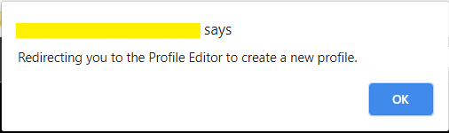

New Nightscout Setup
a) Your Nightscout site should open and direct you to a new profile creation.
{kind=link}
b) Setup your Time zone and eventually all other fields. Do not leave any fields empty. If you don’t know which value to use, just use the default value. You can change these values later at any time.

c) Browse down to Authentication status and click Authenticate. Enter your API secret. Click Update.

d) Click Save.

e) If the following pop-up shows up click OK, and check status (upper right of the window).

f) If you need to modify your profile after this, authenticate with the lock icon (top right of the page): enter your API secret. Then click on the hamburger menu and select Profile Editor.

Privacy warning
Anyone with access to the URL of your Nightscout site, can view your BG and run reports of your data. It it strongly recommended that you enable security to your site once you’re done with the setup
g) Dexcom Share users should see data flowing in after some minutes. xDrip+ users (including Medtronic CareLink followers) should setup the uploader as shown here. xDrip4iOS users here. AAPS and Loop: consult the relative documentation.

You have completed a new Nightscout site creation. You can continue here now.
The following section provides more information that you might not need to use now.